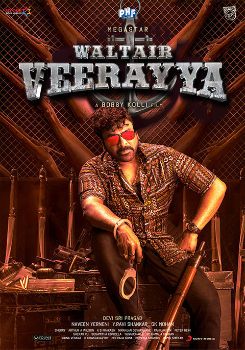

Waltair Veeraya Review: Poonakalu Loaded!

Rating:⭐⭐⭐
Waltair Veeraya is a mass commerical action film directed by K.S.Ravindra (also goes by "Bobby"). The overall
film was surprisingly decent despite some flaws in both the first half and second half. It's great to see Chiru in a
more vintage look, because his other films he tries to act as of more mature for his role. Gladly, this was the comeback
deserved after a hattrick flop between Sye Raa Narasimha Reddy, Acharya, and GodFather. DSP's music is average but the BGM
was fantastic. We even got Ravi Teja in the second half as more of an extended cameo which served a double treat for fans.
My slight criticisms has to do deal with "age gap" between Chiru and the heroine, as it did generate some cringe scenes here
and there, but what you can expect from an old actor trying a vintage look? Overall Chiru fans can say BOSS IS BACK!